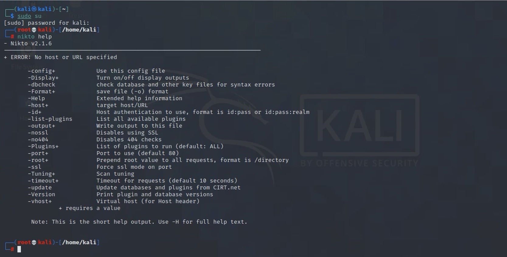

Nikto is a preinstalled tool in Kali Linux so basically in order to use it we just have to call it in a terminal.
You can either call simply for "nikto" or you can call for the help menu directly with the command "nikto -help" as you can see below.
In the menu that has just appear you can see the short but enough version of the help menu. You can call the full help menu by "nikto -H".
While it has a lot of configuring items, for a normal scan of a target host you just have to set the targeted host by " -host *host* ".
Another option that is commonly used is the -output and -Format functions which will allow you to store the result in a formated file.
Below you can see a full command that asks Nikto to scan Juice Shop and to save the result in a txt formated file.
After started, Nikto will provide at first the target's IP, the Hostname and the target Port.
The next section will contain SSL info and Start Time.
The last section and the longest will contain all the vulnerabilities Nikto can find about the target.